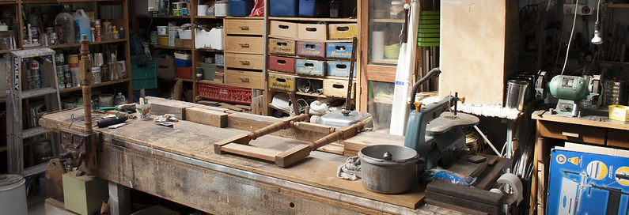

| packages | used for |
|---|---|
| midfielddata | student records practice data |
| data.table | manipulating data |
| dplyr | manipulating data |
| tidyr | manipulating data |
| wrapr | confirming two dataframes are equivalent |
| cdata | pivoting |
| ggplot2 | creating charts |
Shaping MIDFIELD data three ways

Using base R, data.table, and dplyr/tidyr to transform MIDFIELD data as needed for your analysis.
In this series of articles, we hope to address the needs of users who would prefer to use base R or dplyr syntax in lieu of the data.table syntax that appears everywhere else in midfieldr tutorials. We illustrate common data shaping tasks three ways: using base R, data.table, and dplyr systems.
Sources for translating among the three systems include (atrebas, 2019; Gimond, 2019; Hajnala, 2018; Mercer, 2020; and Vaughan, 2023). In particular, our outline is roughly based on Chapter 5 of (Zumel & Mount, 2020).
Getting started
Project organization. If you are writing your own scripts to follow along, our tutorials assume that you:
- Are working within an RStudio Project
- Have set up a directory structure with folders for data and scripts.
Packages. The table lists the packages used in the data shaping articles overall. You may wish to install these packages before starting.
We load the packages used in an article as one of the first code chunks, as shown below. You can copy any code chunk by clicking on the “Copy to clipboard” icon .
library("midfielddata")
library("data.table")
library("dplyr", warn.conflicts = FALSE)
library("wrapr")Download and save CSV files. In addition to the student record data in the midfielddata package, we have some prepared data to download from the Institute repository (an Internet connection is required). To download the CSV files and save to the data directory in your RStudio project folder, run the following lines once.
Data
Import the CSV file we just downloaded.
cohort <- fread("data/three_blocs.csv")Load the datasets from midfielddata. View data dictionaries via ?student and ?term.
data(student, term, degree)Have a quick look at each one using dplyr glimpse().
glimpse(cohort)
#> Rows: 12,970
#> Columns: 3
#> $ mcid <chr> "MCID3111142965", "MCID3111145102", "MCID3111150194", "MCID…
#> $ program <chr> "Electrical", "Electrical", "Industrial", "Electrical", "El…
#> $ peer_group <chr> "starters", "starters", "starters", "starters", "starters",…
glimpse(student)
#> Rows: 97,555
#> Columns: 13
#> $ mcid <chr> "MCID3111142225", "MCID3111142283", "MCID3111142290", "…
#> $ institution <chr> "Institution B", "Institution J", "Institution J", "Ins…
#> $ transfer <chr> "First-Time Transfer", "First-Time Transfer", "First-Ti…
#> $ hours_transfer <dbl> NA, NA, NA, NA, NA, NA, NA, NA, NA, NA, NA, NA, NA, NA,…
#> $ race <chr> "Asian", "Asian", "Asian", "Asian", "Asian", "Asian", "…
#> $ sex <chr> "Male", "Female", "Male", "Male", "Male", "Male", "Male…
#> $ age_desc <chr> "Under 25", "Under 25", "Under 25", "Under 25", "Under …
#> $ us_citizen <chr> "Yes", "Yes", "Yes", "Yes", "Yes", "Yes", "Yes", "Yes",…
#> $ home_zip <chr> NA, "22020", "23233", "20853", "22003", "23234", "24148…
#> $ high_school <chr> NA, NA, "471872", NA, "470080", "471877", NA, NA, NA, N…
#> $ sat_math <dbl> NA, 560, 510, 640, 600, 570, 480, NA, NA, NA, 520, 430,…
#> $ sat_verbal <dbl> NA, 230, 380, 460, 500, 530, 530, NA, NA, NA, 490, 490,…
#> $ act_comp <dbl> NA, NA, NA, NA, NA, NA, NA, NA, NA, NA, NA, NA, NA, NA,…
glimpse(term)
#> Rows: 639,915
#> Columns: 13
#> $ mcid <chr> "MCID3111142225", "MCID3111142283", "MCID311114228…
#> $ institution <chr> "Institution B", "Institution J", "Institution J",…
#> $ term <chr> "19881", "19881", "19883", "19885", "19891", "1989…
#> $ cip6 <chr> "140901", "240102", "240102", "190601", "190601", …
#> $ level <chr> "01 First-year", "01 First-year", "01 First-year",…
#> $ standing <chr> "Good Standing", "Academic Probation", "Academic P…
#> $ coop <chr> "No", "No", "No", "No", "No", "No", "No", "No", "N…
#> $ hours_term <dbl> 7, 6, 12, 6, 6, 6, 6, 18, 15, 14, 13, 3, 13, 3, 3,…
#> $ hours_term_attempt <dbl> 7, 6, 12, 6, 6, 6, 6, 18, 18, 14, 13, 3, 13, 3, 3,…
#> $ hours_cumul <dbl> 7, 6, 18, 24, 30, 36, 42, 63, 78, 14, 27, 60, 82, …
#> $ hours_cumul_attempt <dbl> 7, 6, 18, 24, 30, 36, 42, 63, 81, 14, 27, 60, 82, …
#> $ gpa_term <dbl> 2.56, 1.85, 1.93, 2.15, 1.85, 1.20, 1.85, 2.33, 2.…
#> $ gpa_cumul <dbl> 2.56, 1.85, 1.90, 1.96, 1.94, 1.82, 1.82, 1.98, 2.…
glimpse(degree)
#> Rows: 49,665
#> Columns: 5
#> $ mcid <chr> "MCID3111142225", "MCID3111142290", "MCID3111142294", "MCI…
#> $ institution <chr> "Institution B", "Institution J", "Institution J", "Instit…
#> $ term_degree <chr> "19881", "19921", "19903", "19921", "19913", "19883", "199…
#> $ cip6 <chr> "141001", "141001", "141001", "141001", "090401", "141901"…
#> $ degree <chr> "Bachelor of Science in Electrical Engineering", "Bachelor…Three systems
For every data frame we use, we construct a separate version for each system. For example, the three versions of the student table are prepared as shown below. Code chunks are color-coded by system.
# base R
student_df <- data.frame(student)# data.table
student_dt <- copy(student)# dplyr
student_tbl <- tibble(student)The data frame names include a suffix to indicate the system as well.
| system | suffix | example | class |
|---|---|---|---|
| base R | _df | student_df | data.frame |
| data.table | _dt | student_dt | data.frame, data.table |
| dplyr | _tbl | student_tbl | data.frame, tbl_df, tbl |
Method
We want to make each operation as transparent as possible for the R novice. Hence we generally write a line of code to do one thing, avoiding combined or nested operations and introducing intermediate or temporary variables that get overwritten before reaching a desired result, e.g.,
DFfor an intermediate data.frame,DTfor an intermediate data.table,vecfor an intermediate vector, etc.In the same vein, we sometimes use intermediate variables for indexing, e.g.
rows_we_want,columns_we_want,order_index, etc.In general, we show only one approach per task per system, offering what we think is the best choice for our audience. In R there are usually multiple approaches for the same task and resources for exploring other methods are readily available.
We follow the convention of chaining dplyr steps with the magrittr pipe
%>%(though assigning temporary variables would work just as well). We do not generally use the piping or chaining operations available in base R and data.table.In each example, results are manipulated such that base R, data.table, and dplyr yield the same form (usually a data frame) with the same variables and observations. In most cases, we compare data frame equivalence with
wrapr::check_equiv_frames()which converts its arguments to data.frame class and reorders columns and rows.
check_equiv_frames(student_df, student_dt)
#> [1] TRUE
check_equiv_frames(student_dt, student_tbl)
#> [1] TRUE- In cases where re-ordering rows or columns is part of the task, we compare results by using base R
all.equal()instead ofcheck_equiv_frames(). By setting thecheck.attributesargument to FALSE, data frame attributes (other than column names) are ignored, for example, row.names (if any) and class (e.g.,tblordata.table).
References
atrebas. (2019). A data.table and dplyr tour. https://atrebas.github.io/post/2019-03-03-datatable-dplyr/
Gimond, M. (2019). base vs. tidyverse vs. data.table. https://mgimond.github.io/rug_2019_12/Index.html
Hajnala, J. (2018). Data subsetting and manipulation with base R. https://jozef.io/r002-data-manipulation/
Mercer, J. (2020). Base R, the tidyverse, and data.table: A comparison of R dialects to wrangle your data. https://tinyurl.com/yy544udn
Vaughan, D. (2023). dplyr <=> base R. https://dplyr.tidyverse.org/articles/base.html
Zumel, N., & Mount, J. (2020). Practical Data Science with R (2nd ed.). Manning Publications Co.
Appendix
The R and package version numbers (as of this writing) are:
R.version$version.string
#> [1] "R version 4.4.1 (2024-06-14 ucrt)"
packageVersion("midfielddata")
#> [1] '0.2.1'
packageVersion("data.table")
#> [1] '1.15.4'
packageVersion("dplyr")
#> [1] '1.1.4'
packageVersion("tidyr")
#> [1] '1.3.1'
packageVersion("wrapr")
#> [1] '2.1.0'
packageVersion("cdata")
#> [1] '1.2.1'
packageVersion("ggplot2")
#> [1] '3.5.1'